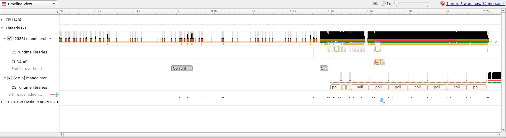
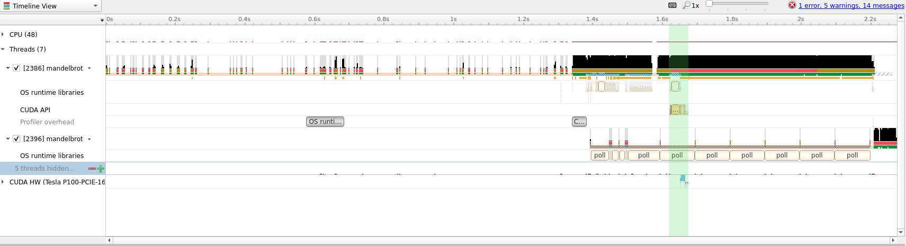
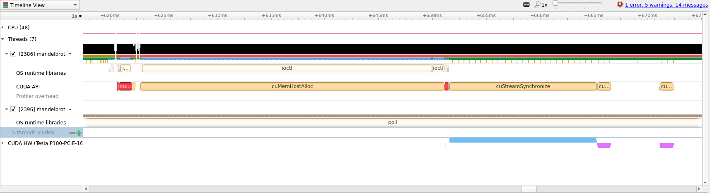
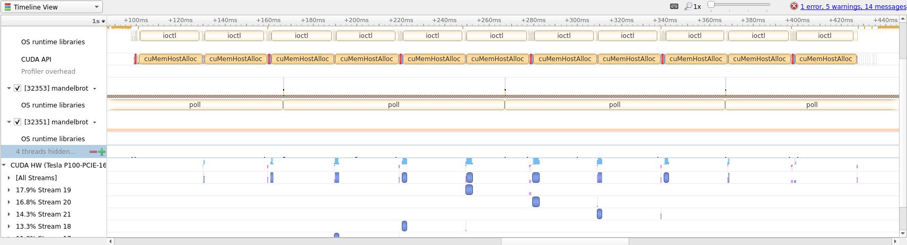

Async and Multi-GPU OpenACC
In this guide we will go over a few advance topics regarding OpenACC. The guide will cover asynchronous operations, which can overlap memory transfers and compute for higher throughput, and how to utilize multiple GPUs.
Tip
If you are not sure what OpenACC is we have an introductory guide which explains the basics.
Introduction
Asynchronous programming in OpenACC is a way to schedule work so that the GPU can work concurrently with the tasks given. Note that this does not mean that the GPU will necessarily run multiple kernels simultaneously. Often, asynchronous programming with OpenACC will allow us to overlap memory transfer with kernel execution. This can improve efficiency since the GPU does not sit idle while transferring memory back-and-forth, resulting in improved throughput. If you are just beginning to translate an existing code base to OpenACC, asynchronous operations should be some of the last optimizations to apply and can be tricky when the problem is not embarrassingly parallel.
After reading this guide you should be familiar with the following topics and ideas.
Understand how asynchronous programming with OpenACC works.
How memory and kernels can be overlapped.
How different OpenACC blocks can be made dependent on each other.
Which problems are suitable for asynchronous OpenACC.
Know the basics of utilizing multiple GPUs.
To get started we will need some piece of code that we would like to accelerate. This time we have chosen to accelerate the visualization of the Mandelbrot set.
Since this code requires a bit more setup than before we have created a meson
project that can be used to build the code. Below we
have attached the full project, and we will offer zip archives of the full
project as we make changes, but will focus on the main code in mandelbrot.c.
Serial version of project as 'zip' archive
Below we have attached the full version of mandelbrot.c and highlighted the
two main areas of computation where we will focus our efforts.
/**
* Mandelbrot implementation for accelerators (e.g. GPUs)
*/
#include "utils/lodepng.h"
#include "utils/palette.h"
#include <omp.h>
#include <stdint.h>
#include <stdio.h>
#include <stdlib.h>
#include <string.h>
// Default width and height for image if not given
static const int WIDTH = 1280;
static const int HEIGHT = 720;
// Default output name if not given
static const char* OUTPUT_NAME = "mandelbrot.png";
// Maximum iteration count before exiting mandelbrot function
static const uint32_t MAX_ITER = 1000;
// Helper function to scale 'num' to the range '[min, max]'
float scale(float num, const float min, const float max) {
const float scale = max - min;
return num * scale + min;
}
/**
* Mandelbrot function, calculates the value of the mandelbrot set at pixel 'px/py'
*/
uint32_t mandelbrot(const int px, const int py, const int width, const int height,
const int max_iter) {
const float x0 = scale((float) px / (float) width, -2.5, 1.);
const float y0 = scale((float) py / (float) height, -1., 1.);
float x = 0.;
float y = 0.;
float x2 = 0.;
float y2 = 0.;
int iters = 0;
while (x2 + y2 < 4. && iters < max_iter) {
y = 2. * x * y + y0;
x = x2 - y2 + x0;
x2 = x * x;
y2 = y * y;
iters += 1;
}
return (uint32_t) iters;
}
int main (int argc, char** argv) {
int width = WIDTH;
int height = HEIGHT;
char output_name[128];
int max_iter = MAX_ITER;
strncpy (output_name, OUTPUT_NAME, strnlen (OUTPUT_NAME, 127) + 1);
// Assume the first argument is the width and height of the image
if (argc > 1) {
if (strncmp (argv[1], "-h", 2) == 0 || strncmp (argv[1], "--help", 6) == 0) {
printf("Usage: %s <width>x<height> <max iterations> <output filename>\n", argv[0]);
printf("\tImage size can also be one of {8k, 4k, 3k, 1080p, 720p}\n");
return EXIT_SUCCESS;
}
// First we check image size is one of the predefined sizes
if (strncmp (argv[1], "8k", 2) == 0) {
width = 7680;
height = 4320;
} else if (strncmp (argv[1], "4k", 2) == 0) {
width = 3840;
height = 2160;
} else if (strncmp (argv[1], "3k", 2) == 0) {
width = 3000;
height = 2000;
} else if (strncmp (argv[1], "1080p", 5) == 0) {
width = 1920;
height = 1080;
} else if (strncmp (argv[1], "720p", 4) == 0) {
width = 1280;
height = 720;
} else {
// Assume user has supplied <width>x<height>
// Try to find 'x' in argument
char* token;
token = strtok (argv[1], "x");
if (token != NULL) {
width = atoi (token);
} else {
printf("\033[0;31mInvalid width/height definition:\033[0m '%s'\n", argv[1]);
printf("\tShould be '<width>x<height>'\n");
return EXIT_FAILURE;
}
token = strtok (NULL, "x");
if (token != NULL) {
height = atoi (token);
} else {
printf("\033[0;31mInvalid width/height definition:\033[0m '%s'\n", argv[1]);
printf("\tShould be '<width>x<height>'\n");
return EXIT_FAILURE;
}
}
}
// Second argument is the maximum iteration count
if (argc > 2) {
max_iter = atoi (argv[2]);
}
// Third argument is the output filename to write PNG file to
if (argc > 3) {
if (strlen (argv[3]) > 127) {
printf("\033[0;31mOutput filename to large!\033[0m");
return EXIT_FAILURE;
}
strncpy (output_name, argv[3], strnlen (argv[3], 127) + 1);
}
// Allocate storage for image
uint32_t* image = calloc (width * height, sizeof (uint32_t));
if (image == NULL) {
printf("\033[0;31mCould not allocate memory for image!\033[0m\n");
return EXIT_FAILURE;
}
printf("Generating \033[0;35m%dx%d\033[0m image with max \033[0;35m%d\033[0m iterations\n",
width, height,
max_iter);
/****************************************************************************/
/*************************** Main computation ***************************/
/****************************************************************************/
const double start_time = omp_get_wtime ();
// For each pixel of our image calculate the value of the mandelbrot set
for (int y = 0; y < height; y++) {
for (int x = 0; x < width; x++) {
const uint32_t iters = mandelbrot (x, y, width, height, max_iter);
image[y * width + x] = palette[iters % palette_size];
}
}
const double end_time = omp_get_wtime ();
printf("Used \033[0;35m%.3f\033[0m ms for computation\n",
(end_time - start_time) * 1000.0);
/****************************************************************************/
// Write image to file
const unsigned char png_error = lodepng_encode32_file(output_name,
(const unsigned char*) image,
width, height);
// Free image storage
free (image);
if (png_error) {
printf("\033[0;31mAn error occurred while writing to PNG:\033[0m %s\n",
lodepng_error_text (png_error));
return EXIT_FAILURE;
}
printf("Wrote Mandelbrot result to \033[0;35m%s\033[0m\n", output_name);
return EXIT_SUCCESS;
}
To build the project on Saga we first need to load a few modules before using
meson to build the project.
$ module load Python/3.8.2-GCCcore-9.3.0
$ pip3 install --user meson
# To download the project directly
# wget https://documentation.sigma2.no/_downloads/bdfbca90a90a8d1b824fc6b1154ceee7/serial.zip
$ unzip serial.zip
$ cd AccelBrot-master
Note
We need to manually install meson above since we require version 0.56.0
which only exist as a pip package at the time of writing. Check with module --show_hidden avail Meson to see if a sufficiently new version is installed.
Then to build the project load NVHPC + Ninja and run the following meson
commands
$ module load NVHPC/20.7 Ninja/1.10.0-GCCcore-9.3.0
$ CC=nvc meson setup builddir --buildtype=debugoptimized
$ meson compile -C builddir
Afterwards, as long as NVHPC and Ninja is loaded, only the last command
meson compile -C builddir is required when making changes.
To run this on Saga (without GPU) the following srun command can be used
$ srun --account=<your project number> --time=02:00 --mem-per-cpu=1G ./builddir/src/mandelbrot
Tip
Try different image size or iteration parameters to see how much time the CPU vs
GPU will take, ./builddir/src/mandelbrot 4k.
Tip
Use this opportunity to try to optimize the above code with OpenACC directives without focusing on asynchronous programming or multi-GPU setups.
Initial translation to OpenACC
To run the above code on a GPU using OpenACC we first need to introduce the
#pragma acc routine directive. This directive tells OpenACC that we would like
the function following the directive to be translated into GPU code. When
looking at the code above we can see that the mandelbrot() function is used to
separate the calculation of the set and iteration over the image. To be able to
optimize the loop we therefore need to translate the mandelbrot() function.
// Helper function to scale 'num' to the range '[min, max]'
#pragma acc routine seq
float scale(float num, const float min, const float max) {
const float scale = max - min;
return num * scale + min;
}
/**
* Mandelbrot function, calculates the value of the mandelbrot set at pixel 'px/py'
*/
#pragma acc routine seq
uint32_t mandelbrot(const int px, const int py, const int width, const int height,
const int max_iter) {
const float x0 = scale((float) px / (float) width, -2.5, 1.);
const float y0 = scale((float) py / (float) height, -1., 1.);
float x = 0.;
float y = 0.;
float x2 = 0.;
float y2 = 0.;
int iters = 0;
while (x2 + y2 < 4. && iters < max_iter) {
y = 2. * x * y + y0;
x = x2 - y2 + x0;
x2 = x * x;
y2 = y * y;
iters += 1;
}
return (uint32_t) iters;
}
Note
In the above code we added seq to the end of the directive. This tells OpenACC
that the routine must run sequentially on the GPU and no additional
parallelization is possible. Adding seq is not necessary, but can be a good
way to ensure that your thinking is correct as the compiler would complain if it
is not correct. See the quick
reference
for further explanation of the possible additions to #pragma acc routine.
After this we can add the #pragma acc parallel loop directives around the
image computation.
// For each pixel of our image calculate the value of the mandelbrot set
#pragma acc parallel loop \
copyout(image[:width * height]) \
copyin(palette[:palette_size]) \
collapse(2)
for (int y = 0; y < height; y++) {
for (int x = 0; x < width; x++) {
const uint32_t iters = mandelbrot (x, y, width, height, max_iter);
image[y * width + x] = palette[iters % palette_size];
}
}
Initial translation of 'mandelbrot.c' to OpenACC
This initial translation is already quite a lot better than the serial CPU
version (clocking in at around 10x improvement when generating a 4k image).
Let’s see what insight we can gain from running with Nsight.
To run with Nsight use the following invocation of srun
$ srun --account=<your project number> --time=02:00 --mem-per-cpu=1G --partition=accel --gpus=1 nsys profile -t cuda,openacc,osrt -o initial ./builddir/src/mandelbrot 4k

As we can see, most of the timeline is taken with doing other work and not the
actual compute. We will therefore zoom into the desired range (which we can
identify by following the CUDA API row until a cluster of yellow boxes
appear).
 
From the above screenshot we can see that we are running on the GPU, but computation and memory copies are sequential. For large amounts of data this is less than optimal and we can try to improve the situation with asynchronous scheduling of compute and memory transfer.
Async OpenACC
Translating a piece of OpenACC code to run asynchronously requires us to split our work into smaller tasks that we know could run concurrently. Looking at our main loop we can see that every computation is independent of any other iteration or computation. This make the Mandelbrot example quite simple to translate, but that does not mean asynchronous operations is only for embarrassingly parallel problems.
Tip
One way to quickly utilize asynchronous OpenACC is to identify blocks of code
that are run sequentially (e.g. one loop that does something to A and another
loop that does something to B) and does not involve data from one another.
Loops like that can be run asynchronously which can increase throughput by
overlapping computation and memory transfer.
In our case we can split the computation on rows and process the image in
blocks. This will allow us to use the #pragma acc update directive to copy
data from the GPU per image block instead of doing this all at the end.
Async OpenACC project as 'zip'
To split the image into blocks we will create a new command line parameter and add an additional loop around our computation.
1 const int block_size = height / num_blocks;
2 #pragma acc data create(image[:width * height]) copyin(palette[:palette_size])
3 for (int block = 0; block < num_blocks; block++) {
4 const int start = block * block_size;
5 const int end = (block != num_blocks - 1) ? start + block_size : height;
6 const int num_elements = end - start;
7 // For each pixel of our image calculate the value of the mandelbrot set
8 #pragma acc parallel loop collapse(2) async(block)
9 for (int y = start; y < end; y++) {
10 for (int x = 0; x < width; x++) {
11 const uint32_t iters = mandelbrot (x, y, width, height, max_iter);
12 image[y * width + x] = palette[iters % palette_size];
13 }
14 }
15 #pragma acc update self(image[start * width:num_elements * width]) async(block)
16 }
17 #pragma acc wait
In the above code the num_blocks value divides our image into a given number
of blocks. Then we create and copy the necessary data before beginning our
actual computation. Notice in particular the async directive added on line
8. This directive tells OpenACC that it should launch the kernel and
immediately continue working. The parameter given to async is the queue
number, kernels submitted to the same queue must wait for previous work in that
queue to finish before being launched. Notice therefore that we, on line 15,
ensure that we have the same variable block which means that we do not update
the data before the computation is complete. Lastly, on line 17 we wait for
all previously launched asynchronous work to finish before continuing.
We will run this again with Nsight to see if we were able to perform the work
asynchronously. Use the following command on Saga (don’t forget to compile with
meson compile -C builddir)
$ srun --account=<your project number> --time=02:00 --mem-per-cpu=1G --partition=accel --gpus=1 nsys profile -t cuda,openacc,osrt -o async ./builddir/src/mandelbrot 4k
This new code runs about 1.25x faster than the initial translation, which
shows the value in overlapping memory and compute. Below we have attached the
zoomed in view of the Nsight timeline to show how asynchronous OpenACC looks.

Utilizing multiple GPUs
To utilize multiple GPUs on Saga we will have to dip into the OpenACC runtime
calls to query and set which GPU we want to run on. We will use the
acc_get_num_devices and acc_set_device_num methods to assign work to GPUs.
Tip
To see all the directives and runtime methods of OpenACC consult the quick reference.
Tip
For most real world code it can be very difficult to find places to split the work over multiple GPUs and so a different technique might be called for.
Instead of trying to split loops into work for multiple GPUs, try to see already existing possibilities to split the work. One natural way is to give individual MPI ranks their own GPU to utilize.
This can be easily accomplished through Slurm with the --gpus-per-task flag
which will allocate a number of GPUs appropriate for the number of Slurm tasks.
Multi-GPU OpenACC project as 'zip'
const int num_gpus = acc_get_num_devices (acc_device_nvidia);
printf("Found \033[0;35m%d\033[0m devices to split compute over\n", num_gpus);
const double start_time = omp_get_wtime ();
const int block_size = height / num_blocks;
for (int g = 0; g < num_gpus; g++) {
acc_set_device_num(g, acc_device_nvidia);
#pragma acc enter data create(image[:width * height]) copyin(palette[:palette_size])
}
for (int block = 0; block < num_blocks; block++) {
const int start = block * block_size;
const int end = (block != num_blocks - 1) ? start + block_size : height;
const int num_elements = end - start;
acc_set_device_num(block % num_gpus, acc_device_nvidia);
// For each pixel of our image calculate the value of the mandelbrot set
#pragma acc parallel loop collapse(2) async(block)
for (int y = start; y < end; y++) {
for (int x = 0; x < width; x++) {
const uint32_t iters = mandelbrot (x, y, width, height, max_iter);
image[y * width + x] = palette[iters % palette_size];
}
}
#pragma acc update self(image[start * width:num_elements * width]) async(block)
}
for (int g = 0; g < num_gpus; g++) {
acc_set_device_num(g, acc_device_nvidia);
#pragma acc wait
#pragma acc exit data delete(image[:width * height]) delete(palette[:palette_size])
}
Notice that we copy the data to each GPU and then assign a device after the
current block number. We also have to take special care when exiting all loops
that we wait for all GPUs to finish and remove the data since the #pragma acc enter data directive keeps the data in GPU memory until otherwise stated (in
contrast to #pragma acc data which keeps the data only for the extent of the
following block of code).
This last iterations is about 1.5x faster using --gpus=2 with
diminishing, or even negative, returns for additional GPUs.
Summary
We have shown how to translate the Mandelbrot calculation into OpenACC code, how such code can be made asynchronous to overlap computation and memory transfer, and how to utilize multiple GPUs on Saga.
Below is the summary of speedup where the improvement is shown relative to the previous entry in the table (take the measured times with a grain of salt, they are more an illustration of possible speedup, not guaranteed speedup).
Version |
Time in milliseconds |
Speedup |
|---|---|---|
Serial |
|
N/A |
OpenMP |
|
|
Initial OpenACC |
|
|
Async |
|
|
Multi-GPU |
|
|
Multi-GPU |
|
|
* To keep the comparison as fair as possible we compare the CPU resources |
||
that would be the equivalent to [the billing resources of 1 GPU on |
||
Saga](../../jobs/projects_accounting.md). |